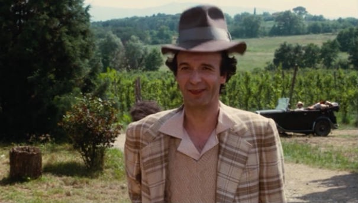
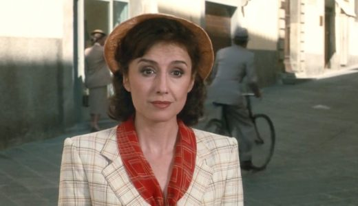
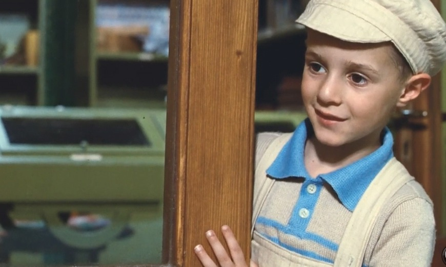
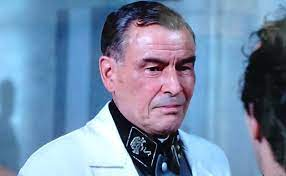

1997年公開のイタリア映画「Life Is Beautiful」は、カンヌ映画祭で審査員グランプリに輝いた、ロベルト・ベニーニ監 督・脚本・主演の感動作である。ナチの強制収容所に収監されたある一家の物語を、ユーモラスかつ温かな視点で描く。“イタリアのチャップリン”と称される、ベニーニのユーモアと哀しみを交錯させた演出が秀逸。 第二次世界大戦下のユダヤ人迫害（ホロコースト）を、ユダヤ系イタリア人の親子の視点から描いた作品である。 第51回カンヌ国際映画祭（1998年）で審査員グランプリを受賞したほか、第71回米国アカデミー賞(1999年）で作品賞ほか7部門にノミネートされ、そのうち、主演男優賞、作曲賞、外国語映画賞を受賞した。また、トロント国際映画祭の観客賞やセザール賞の外国映画賞も受賞している。
「どんな状況下でも人生は生きるに値するほど美しい」
そんなことをこの映画が教えてくれます。
Introduction
Story
第二次世界大戦前夜の1939年、ユダヤ系イタリア人のグイドは、叔父を頼りに友人とともに北イタリアの田舎町にやってきた。陽気な性格の彼は、小学校の教師ドーラに一目惚れし、桁外れなアタックの末に駆落ち同然で結婚して、愛息ジョズエをもうけ、3人は幸せな日々を送っていた。 やがて戦時色は次第に濃くなり、ユダヤ人に対する迫害行為が行われる。北イタリアに駐留してきたナチス・ドイツによって、突然彼らに強制収容所への収監命令が下り、3人は強制収容所に送られてしまう。そんな絶望のなかでも、決して希望を捨てず、ユーモアを忘れず、懸命に生きようとする親子の物語である。
Characters
グイド・オレフィチェ(ロベルト・ベニーニ)
グイド・オレフィチェは、ドーラの夫でジョズエの父である。陽気でよくしゃべり、人を楽しませるためのウソをよくつき、いつも笑顔を絶やさない。ユダヤ系イタリア人。役者のロベルト・ベニーニはこの映画の監 督・脚本・主演すべてを務めた。


ドーラ(ニコレッタ・ブラスキ)
ドーラは、グイドの妻でジョズエの母親となる人物。アレッツォの町で小学校の教師をしている。作品序盤では役人のロドルフォと幼なじみで交際しているが、うまくいっているとはいえない。嫌なことがあるとしゃっくりが出る。
ジョズエ・オレフィチェ(ジョルジョ・カンタリーニ)
ジョズエ・オレフィチェは、グイドとドーラの息子である。シャワーが大嫌い。戦車が好きで、戦車のオモチャを持っている。股間をさわるクセがある。嫌なことがあるとしゃっくりが出る点が、母親と共通している。


レッシング医師(ホルスト・ブッフホルツ)
レッシングは、ドイツ人の医師である。なぞなぞが何よりも大好きで、アレッツォのホテルで給仕をするグイドとは、なぞなぞを出し合うことで親しくなる。
収容所で健康診断を担当し、グイドと再会する。グイドと大事な話をするために夕食会の給仕を頼み、グイドに希望を抱かせる。だが、グイドへの話は、どうしても解けないなぞなぞを解いてもらうためだった。なぞなぞが解けずに夜も眠れなくて苦しいとグイドに語る。